#There is no assumption that X follows any particular distribution
X <- rpois(30, lambda=3)
e <- rnorm(30, mean=0, sd=4)
Y <- 5 + 5*X + e
plot(X, Y)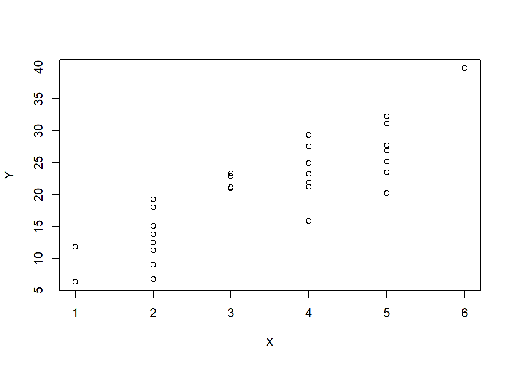
We can simulate data from a linear model \[Y_i = 5 + 5X+\epsilon\] where \(\epsilon \overset{iid}{\sim}N(\mu,\sigma^2)\).
#There is no assumption that X follows any particular distribution
X <- rpois(30, lambda=3)
e <- rnorm(30, mean=0, sd=4)
Y <- 5 + 5*X + e
plot(X, Y)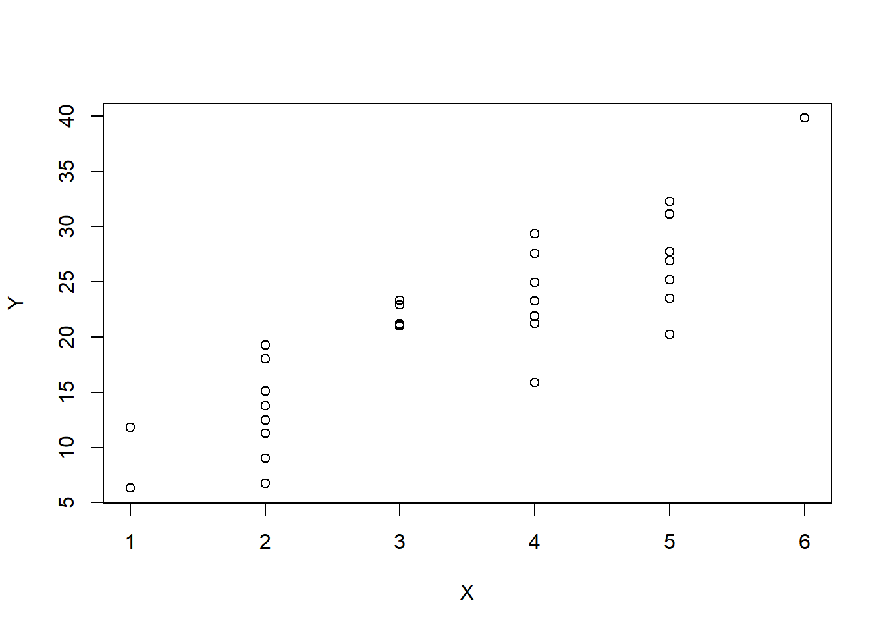
#generate data
set.seed(2)
yrs <- rbinom(100,20,.40)+8
inc <- (50 + (yrs-12)*(170-55)/10 + rnorm(100,0,15) )/ 10
#note that the true model is Y= -8.8 + + 1.15 X + e
# also note that SD(epsilon) = 1.5inc.lm <- lm(inc~1+yrs)
inc.lm
Call:
lm(formula = inc ~ 1 + yrs)
Coefficients:
(Intercept) yrs
-8.553 1.137 lead_data <- read.csv("data/lead.csv")
atlanta_lead <- subset(lead_data, city=="Atlanta")
summary(atlanta_lead) city air.pb.metric.tons aggr.assault.per.million
Length:36 Min. : 421.0 Min. : 431.0
Class :character 1st Qu.: 603.8 1st Qu.: 924.5
Mode :character Median : 813.5 Median :1295.5
Mean : 919.9 Mean :1399.2
3rd Qu.:1247.8 3rd Qu.:1850.2
Max. :1516.0 Max. :2301.0 # if we call lm without storing it to a object
lm(aggr.assault.per.million ~ 1 + air.pb.metric.tons, data=atlanta_lead)
Call:
lm(formula = aggr.assault.per.million ~ 1 + air.pb.metric.tons,
data = atlanta_lead)
Coefficients:
(Intercept) air.pb.metric.tons
107.943 1.404 atlanta_lead_lm <- lm(aggr.assault.per.million ~ 1 + air.pb.metric.tons, data=atlanta_lead)
summary(atlanta_lead_lm)
Call:
lm(formula = aggr.assault.per.million ~ 1 + air.pb.metric.tons,
data = atlanta_lead)
Residuals:
Min 1Q Median 3Q Max
-356.36 -84.55 6.89 122.93 382.88
Coefficients:
Estimate Std. Error t value Pr(>|t|)
(Intercept) 107.94276 80.46409 1.342 0.189
air.pb.metric.tons 1.40375 0.08112 17.305 <2e-16 ***
---
Signif. codes: 0 '***' 0.001 '**' 0.01 '*' 0.05 '.' 0.1 ' ' 1
Residual standard error: 180.6 on 34 degrees of freedom
Multiple R-squared: 0.898, Adjusted R-squared: 0.895
F-statistic: 299.4 on 1 and 34 DF, p-value: < 2.2e-16#check the R^2
cor(atlanta_lead$air.pb.metric.tons, atlanta_lead$aggr.assault.per.million)[1] 0.9476473cor(atlanta_lead$air.pb.metric.tons, atlanta_lead$aggr.assault.per.million)^2[1] 0.8980353Scatter Plot using Base R
plot(aggr.assault.per.million ~ air.pb.metric.tons, data=atlanta_lead)
abline(atlanta_lead_lm, col="red")
points(y=fitted(atlanta_lead_lm), x=atlanta_lead$air.pb.metric.tons, pch=16 )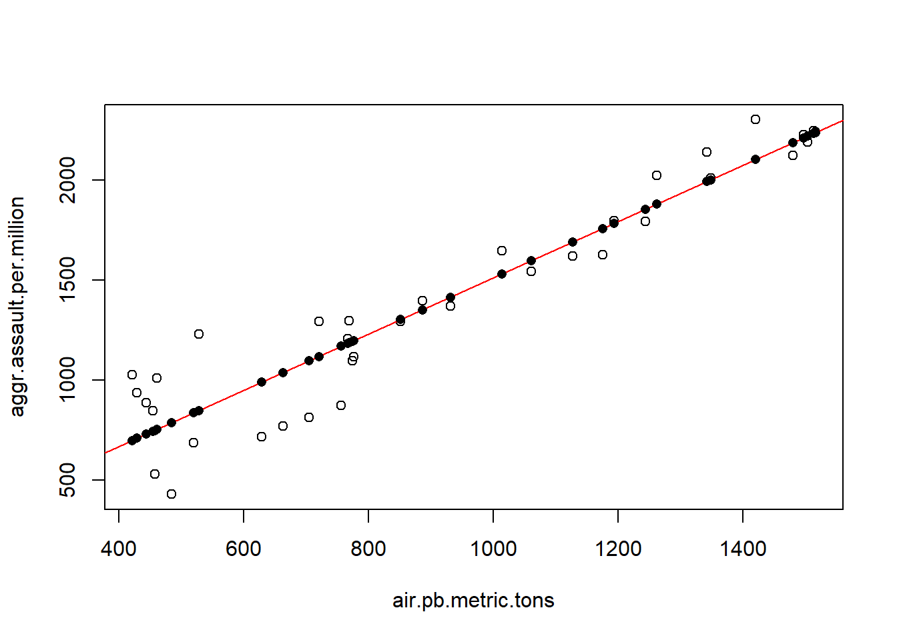
atlanta_lead_lm$residuals 1 2 3 4 5 6
330.080025 226.850054 155.793859 -216.454844 256.930171 102.756395
7 8 9 10 11 12
-356.355996 -149.487118 382.879164 -273.899218 -268.626594 -280.180195
13 14 15 16 17 18
175.359863 -294.175006 23.787530 109.576291 -97.442440 -80.249933
19 20 21 22 23 24
-8.530910 45.337967 -43.830619 116.062179 -55.317646 -70.964906
25 26 27 28 29 30
-129.344731 14.387834 -58.799484 143.529335 148.229626 9.807148
31 32 33 34 35 36
199.737410 -64.487372 16.648940 14.188998 -27.773538 3.977759 # or resid(atlanta_lead_lm)
# or residuals(atlanta_lead_lm)A proper residual plot
plot(y=atlanta_lead_lm$residuals,
x=fitted(atlanta_lead_lm))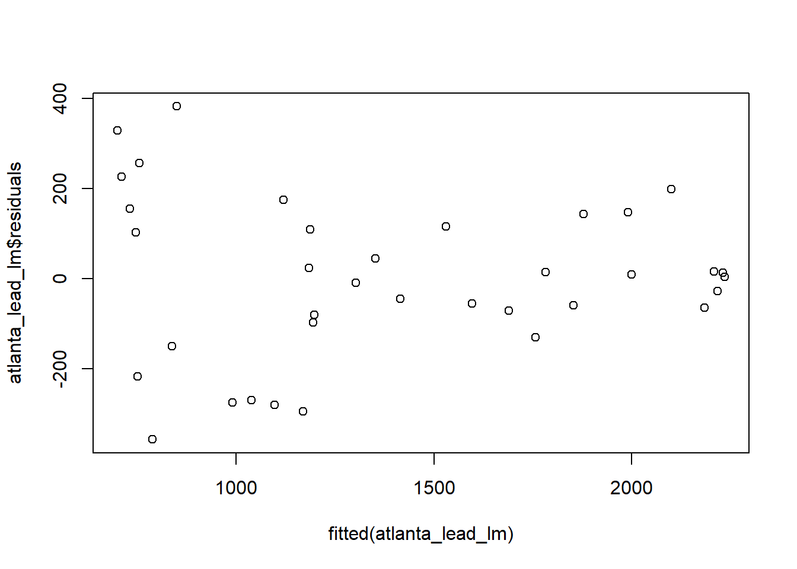
The wrong way to make a residual plot
plot(y=atlanta_lead_lm$residuals,
x=atlanta_lead$aggr.assault.per.million)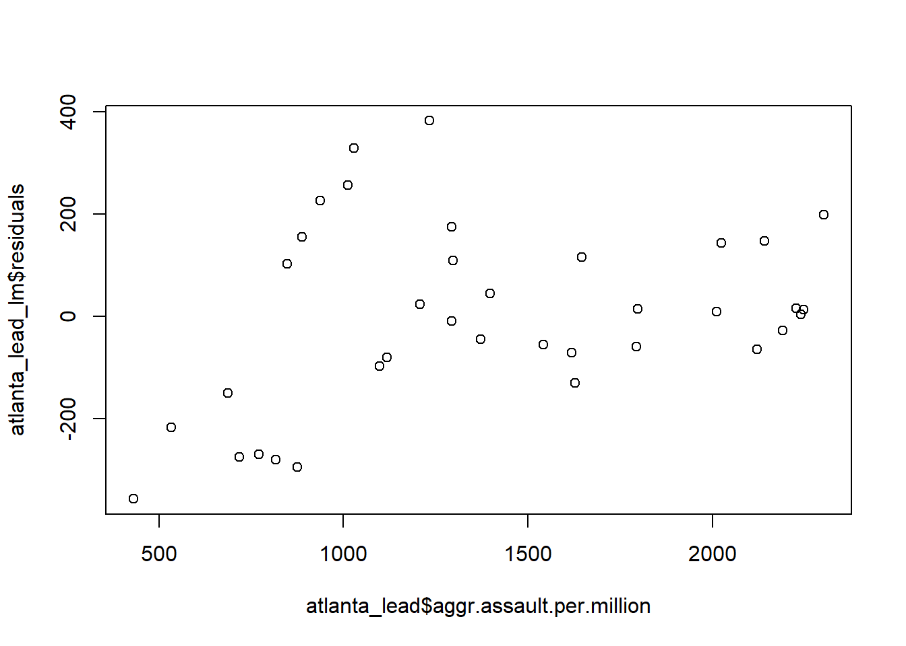
Checking for auto-correlation among residuals
This is when the residual values tend to be associated with the ‘next’ residual.
#we look at the correlation between residuals and the
# next residual
plot(x=resid(atlanta_lead_lm)[-length(resid(atlanta_lead_lm))], y= resid(atlanta_lead_lm)[-1])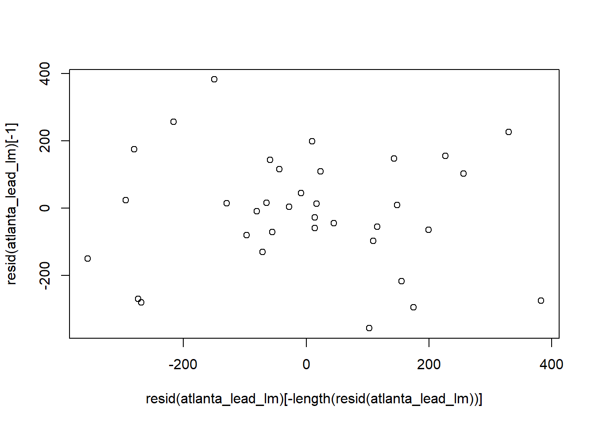
#we're looking for independence between the residual values - no shape QQ plot
n <- nrow(atlanta_lead)
# Let's look at what 36 equally spaced quantiles would be
(1:36)/(37) [1] 0.02702703 0.05405405 0.08108108 0.10810811 0.13513514 0.16216216
[7] 0.18918919 0.21621622 0.24324324 0.27027027 0.29729730 0.32432432
[13] 0.35135135 0.37837838 0.40540541 0.43243243 0.45945946 0.48648649
[19] 0.51351351 0.54054054 0.56756757 0.59459459 0.62162162 0.64864865
[25] 0.67567568 0.70270270 0.72972973 0.75675676 0.78378378 0.81081081
[31] 0.83783784 0.86486486 0.89189189 0.91891892 0.94594595 0.97297297qs <- qnorm((1:36)/(37))
stripchart(qs)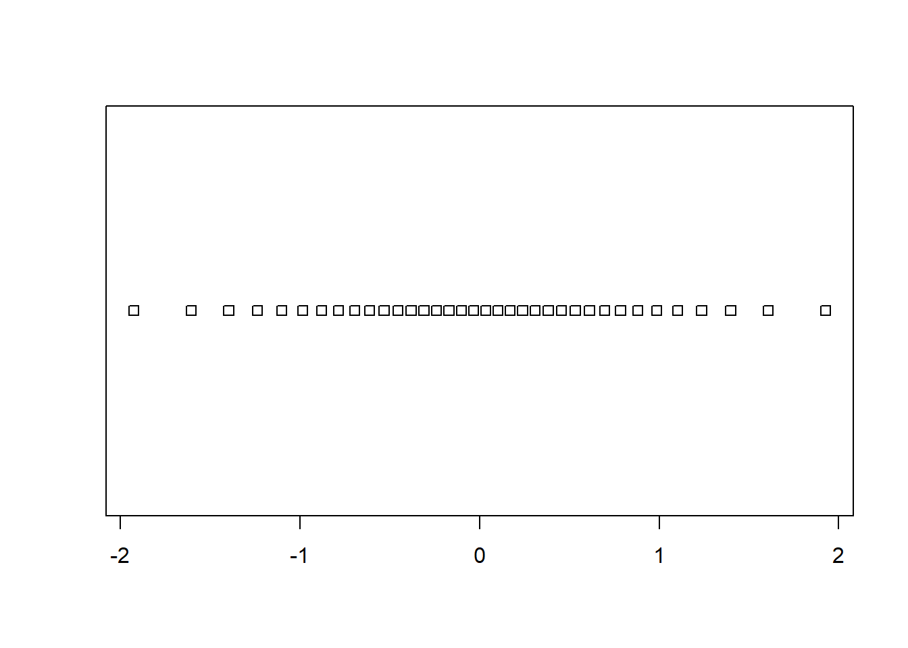
The 4 pre-fab plots of the linear model object
plot(atlanta_lead_lm)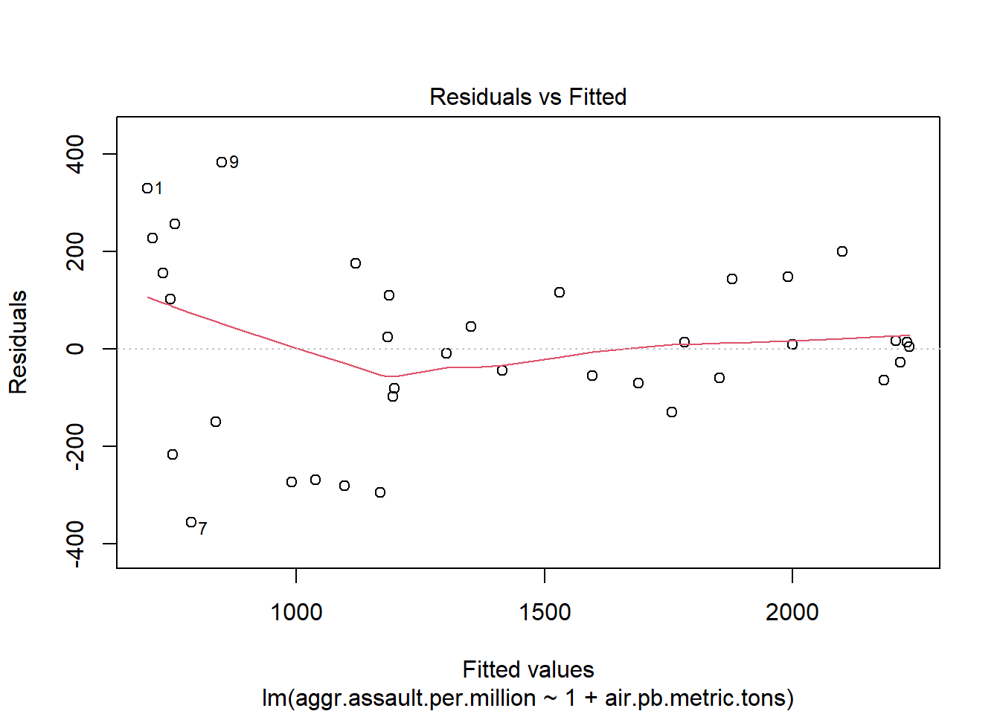

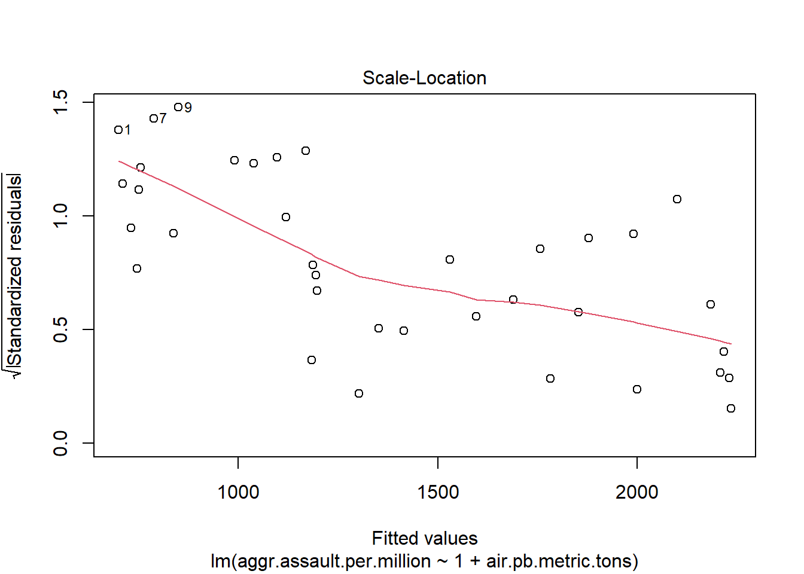
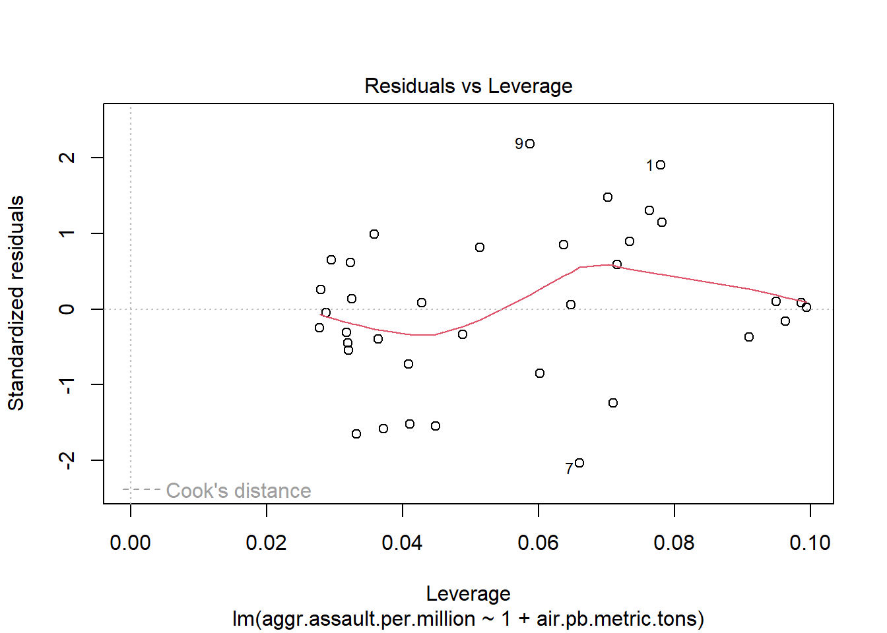
#You can run this to get just the first two plots
plot(atlanta_lead_lm, which=1:2)

Let’s just explore the type of variation we see with normal QQ plots for this sample size so we know what tolerable deviation from the diagonal looks like
par(mar=c(0,0,0,0))
par(mfrow=c(3,3))
qqnorm(rnorm(n))
qqnorm(rnorm(n))
qqnorm(rnorm(n))
qqnorm(rnorm(n))
qqnorm(rnorm(n))
qqnorm(rnorm(n))
qqnorm(rnorm(n))
qqnorm(rnorm(n))
qqnorm(rnorm(n))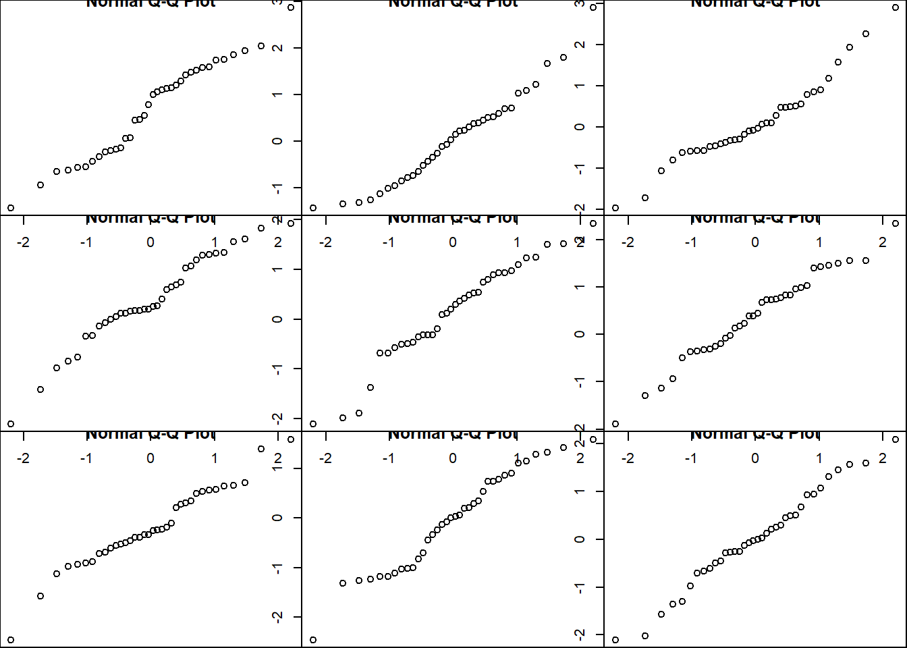
par(mfrow=c(1,1))
#also the qqPlot function in the car library adds a 95% tolerance band
library(car)Loading required package: carDataqqPlot(residuals(atlanta_lead_lm))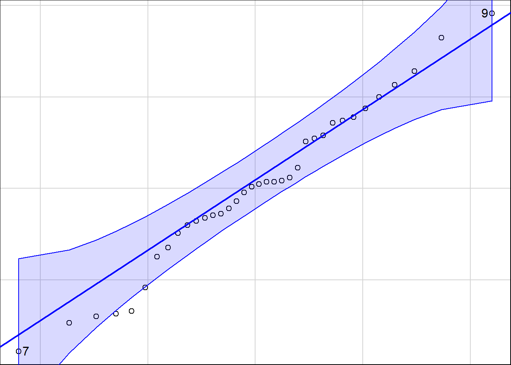
[1] 9 7summary(atlanta_lead_lm)
Call:
lm(formula = aggr.assault.per.million ~ 1 + air.pb.metric.tons,
data = atlanta_lead)
Residuals:
Min 1Q Median 3Q Max
-356.36 -84.55 6.89 122.93 382.88
Coefficients:
Estimate Std. Error t value Pr(>|t|)
(Intercept) 107.94276 80.46409 1.342 0.189
air.pb.metric.tons 1.40375 0.08112 17.305 <2e-16 ***
---
Signif. codes: 0 '***' 0.001 '**' 0.01 '*' 0.05 '.' 0.1 ' ' 1
Residual standard error: 180.6 on 34 degrees of freedom
Multiple R-squared: 0.898, Adjusted R-squared: 0.895
F-statistic: 299.4 on 1 and 34 DF, p-value: < 2.2e-16If for example I want to test \(H_0: \beta_1 = 1.3\) vs \(H_A: \beta_1 > 1.3\) The t statistic would be \[t = \dfrac{1.40375 - 1.3}{.08112}=1.278969\]
t <- (1.40375-1.3)/.08112The \(p\)-value is going to be the right -tail probability from a T distribtuion with 34 degrees of freedom
pt(t, df=34, lower.tail=FALSE)[1] 0.1047842Point estimate
predict(atlanta_lead_lm, newdata=data.frame(air.pb.metric.tons=1300)) 1
1932.813 A confidence interval for \(E(Y|X=1300)\) This estimates the location of the regression line with 95% confidence.
predict(atlanta_lead_lm, newdata=data.frame(air.pb.metric.tons=1300), interval="confidence", level=.95) fit lwr upr
1 1932.813 1845.229 2020.397A ‘prediction’ interval for \(\hat{Y}|X=1300)\) This estimates the range of values for a individual data point line with 95% confidence.
predict(atlanta_lead_lm, newdata=data.frame(air.pb.metric.tons=1300), interval="prediction") fit lwr upr
1 1932.813 1555.393 2310.233NMC <- 1000
b0 <- 0
b1 <- 1
plot(x=NA, y=NA, xlim=c(400,1400), ylim=c(0, 2000))
for(i in 1:NMC){
#Generate data from a linear model
X <- runif(30, 400, 1400)
err <- rnorm(30, 0, sd=100)
Y <- 100 + 1.4 * X + err
myFit <- lm(Y ~ X)
b0[i] <- unname(coefficients(myFit)[1])
b1[i] <- unname(coefficients(myFit)[2])
abline(myFit, col=rgb(0,0,0,.25))
}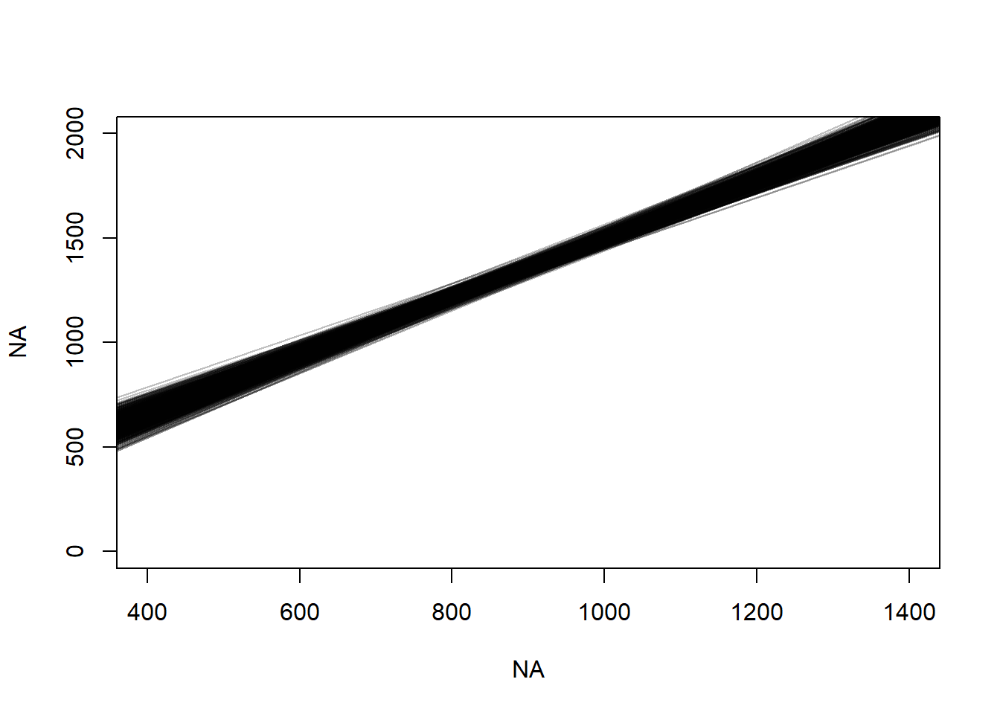
y.est <- b0 + 1300*b1
quantile(y.est, c(.025, .975)) 2.5% 97.5%
1856.640 1981.615 For the second type of confidence interval
X <- rep(1300, 1000)
y.pred <- 100 + 1.4 * X + rnorm(1000, 0, sd=100)
quantile(y.pred, c(.025, .975)) 2.5% 97.5%
1732.092 2117.385 Consider a linear relationship \[y = 10 + 2x + \epsilon\]
Consider if X ranges from .1 to 3, 1 to 30 or 10 to 300, and \(\sigma = .5, 5, 50\)
par(mfrow=c(3,3))
par(mar=c(2,2,1,0))
scalar <- c(.1,1,10)
for(i in 1:3){
for(j in 1:3){
X <- seq(scalar[i]*1, scalar[i]*30, length.out=30)
Y <- 10 + 2 * X + rnorm(length(X), 0, sd=5*scalar[j])
plot(X, Y, main=ifelse(i==1, paste0("sigma=",5*scalar[j]),""))
abline(lm(Y~X))
}
}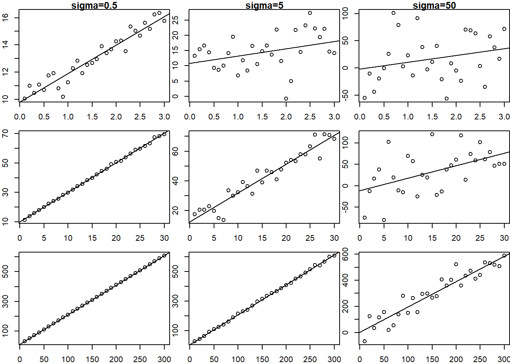
So you can see that the fit of the linear model is related to the range of the \(X\) data as well as the variance of the error term.
Let’s look at the uncertainty of the line of best fit. We’ll sample 30 points from this population and fit a line and repeat.
\(Y = 10 + 2X + \epsilon\)
slopes <- 0; intercepts <- 0; #empty vectors
set.seed(1)
for(i in 1:500){
X <- runif(30, min=10, max=20)
Y <- 10 + 2 * X + rnorm(30, mean=0, sd=5)
if(i==1){
plot(X,Y)
}
linearFit <- lm(Y~X)
abline(linearFit, col=rgb(0,0,0,.1))
slopes[i] <- coef(linearFit)[2]
intercepts[i] <- coef(linearFit)[1]
}
abline(a=10, b=2, col="red")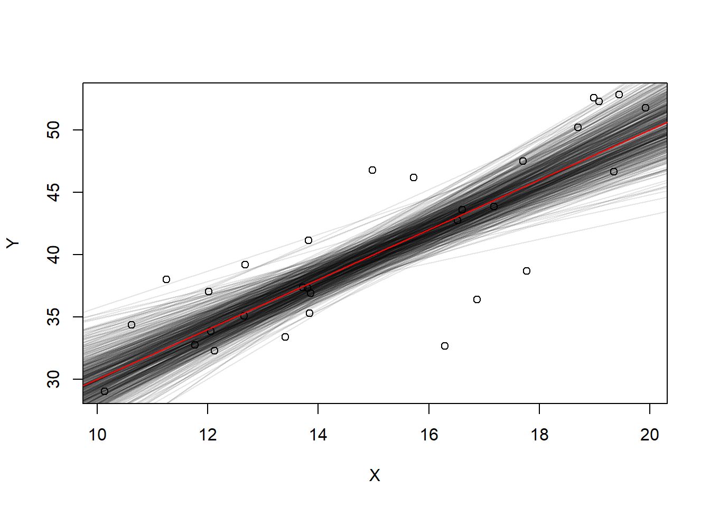
What is the standard deviation of the intercept and slope estimates?
sd(intercepts)[1] 5.022983sd(slopes)[1] 0.332713Look at the summary output from the linear model (this is the very last model that was fit):
summary(linearFit)$coefficients Estimate Std. Error t value Pr(>|t|)
(Intercept) 18.66863 6.6534833 2.805844 0.009027105
X 1.46134 0.4236239 3.449615 0.001796701These are not the exact same as the standard errors, but they are in the ballpark. These standard errors are related to this particular model fit with one set of \((X,Y)\) data. If we averaged the standard error over many model fits we’d probably see the values match much better.
The standard error (i.e. uncertainty) of the slope and intercept estimates is captured by the idea of a “confidence interval” in prediction. Using the last sampled \((X,Y)\) data we fit
Ylm <- lm(Y~X)
xrng <- seq(10,20,.5)Using the predict function we can estimate \(E(Y|X=x)\) for some particular value of \(X\). For example, if \(X=16\) a point estimate is given by
predict(Ylm, newdata=data.frame(X=16)) 1
42.05007 A confidence interval for \(E(Y|X=16)\) is given by adding the interval="confidence" option
predict(Ylm, newdata=data.frame(X=16), interval="confidence") fit lwr upr
1 42.05007 39.96838 44.13175We would say “I am 95% confident that the expected value of \(Y\) when \(x=16\) is between 39.97 and 44.13”.
We can actually plot the confidence interval band over the data range to see it visualized.
CIconf <- predict(Ylm, newdata=data.frame(X=xrng), interval="confidence")
plot(X,Y)
abline(Ylm)
abline(10,2, col="red")
lines(x=xrng, y=CIconf[,2], col="black", lty=2)
lines(x=xrng, y=CIconf[,3], col="black", lty=2)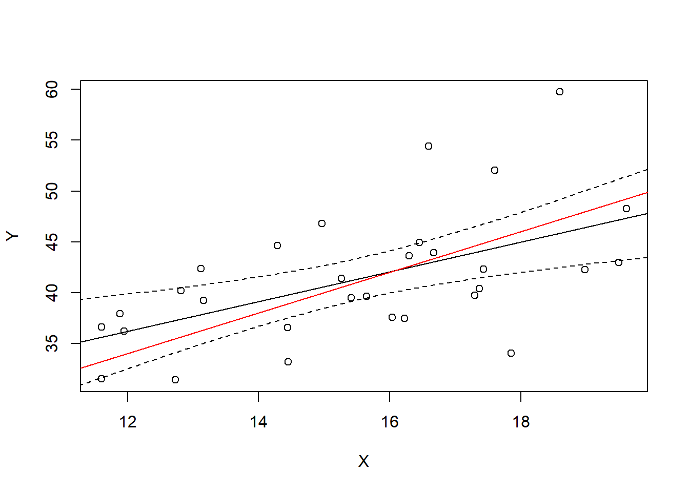
In a sense, we are 95% certain that the true line is within this interval, at least within the range of data that we have observed. But the better way to interpret it is that for any particular \(X\) value, we are 95% certain that the the expected value of \(Y\) (true line value in red) is within the interval.
For example, take \(x=16\). What is the 95% confidence interval for \(E(\hat Y|X=16)\)?
predict(Ylm, newdata=data.frame(X=16), interval="confidence") fit lwr upr
1 42.05007 39.96838 44.13175And what is the true \(E(Y|X=16)\)?
10+2*16[1] 42The 95% confidence manifests itself if we were to repeat this many times, sampling a different sample each time and checking whether our interval covers the true expected value of 42.
contains42 <- 0
NMC <- 1000
for(i in 1:NMC){
X <- runif(30, min=10, max=20)
Y <- 10 + 2 * X + rnorm(30, mean=0, sd=5)
Ylm <- lm(Y~X)
CI <- predict(Ylm, newdata=data.frame(X=16), interval="confidence")[,2:3]
contains42[i] <- CI[1]<=42 & CI[2]>=42
}
mean(contains42) #proportion of TRUEs in the results[1] 0.95On the other hand, a prediction interval is wider. Let’s just plot it and then talk about what it actually means.
Ylm <- lm(Y~X)
xrng <- seq(10,20,.5)
CIconf <- predict(Ylm, newdata=data.frame(X=xrng), interval="confidence")
CIpred <- predict(Ylm, newdata=data.frame(X=xrng), interval="prediction")
plot(X,Y)
abline(Ylm)
abline(10,2, col="red")
lines(x=xrng, y=CIconf[,2], col="black", lty=2)
lines(x=xrng, y=CIconf[,3], col="black", lty=2)
lines(x=xrng, y=CIpred[,2], col="blue", lty=2)
lines(x=xrng, y=CIpred[,3], col="blue", lty=2)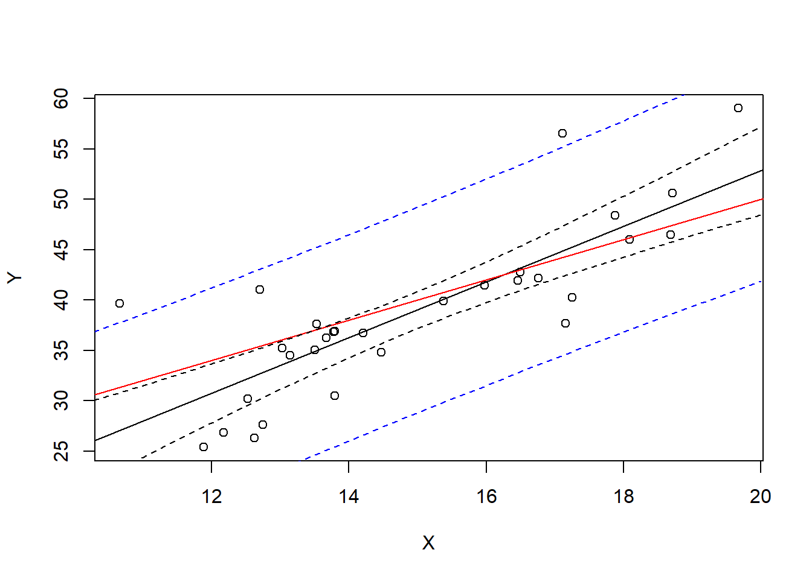
This interval predicts the next observed point from the population. For example, suppose we observe 1000 more points with \(X=16\)
newX <- rep(16,1000)
newY <- 10 + 2 * newX + rnorm(1000, mean=0, sd=5)
Ylm <- lm(Y~X)
xrng <- seq(10,20,.5)
CIpred <- predict(Ylm, newdata=data.frame(X=xrng), interval="prediction")
plot(X,Y, ylim=range(newY))
abline(Ylm)
abline(10,2, col="red")
lines(x=xrng, y=CIpred[,2], col="blue", lty=2)
lines(x=xrng, y=CIpred[,3], col="blue", lty=2)
points(newX, newY, col=rgb(0,0,1,.1))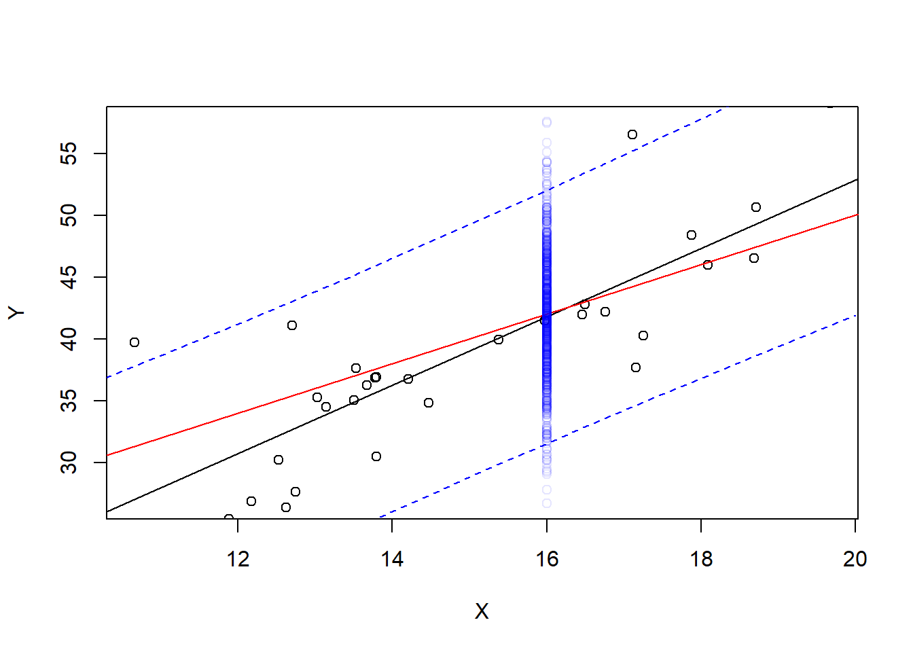
Most of these new observations are within the prediction interval, but not all of them. What proportion of them?
CI <- predict(Ylm, newdata=data.frame(X=16), interval="prediction")
mean(newY >= CI[2] & newY <= CI[3])[1] 0.963Not a huge surprise - It’s a 95% prediction interval. How high or low this proportion is is dependent on the particular 30 data points that we used to fit the data - if our slope and intercept estimates are better, we’ll get closer to 95%, and if our standard error of residuals is higher this will increase the percentage because each prediction interval will be wider.
A better way to measure the predictive power of the interval is to repeat with new data on every model fit:
containsY <- 0
NMC <- 1000
for(i in 1:NMC){
X <- runif(30, min=10, max=20)
Y <- 10 + 2 * X + rnorm(30, mean=0, sd=5)
Ylm <- lm(Y~X)
newY <- 10 + 2 * 16 + rnorm(1, mean=0, sd=5)
CI <- predict(Ylm, newdata=data.frame(X=16), interval="prediction")[,2:3]
containsY[i] <- CI[1]<=newY & CI[2]>=newY
}
mean(containsY) #proportion of TRUEs in the results[1] 0.956Our interpretation of a prediction interval is like this: “I am 95% confident (certain) that for a new observation with \(X=16\), \(Y\) will be within the interval”
Our interpretation of a confidence interval is : “I am 95% confident that the mean \(Y\) value for all observations with \(X=16\) is within the interval”
The standard error of a confidence interval for \(E(Y|x)\) is \[ SE(\overline{Y}|x) = s_e \sqrt{\frac1n + \frac{(x-\bar{x})^2}{SS_{xx}}} \] The standard error of a prediction interval for \(\hat{Y}|x\) is \[ SE(\hat{Y}|x) = s_e \sqrt{1+\frac1n + \frac{(x-\bar{x})^2}{SS_{xx}}} \] Thus the prediction interval will be wider (notice the “1+” in the formula).
Why is the prediction interval wider than the confidence interval? There are two sources of uncertainty. The first is that we only estimated the placement of the model line - the slope and intercept are both estimates. As you saw before, new data would give us new estimates and there is some natural uncertainty.
The second source of uncertainty is that there are factors not in the model which give variation captured in the \(\sigma^2_\epsilon\) term in the model.